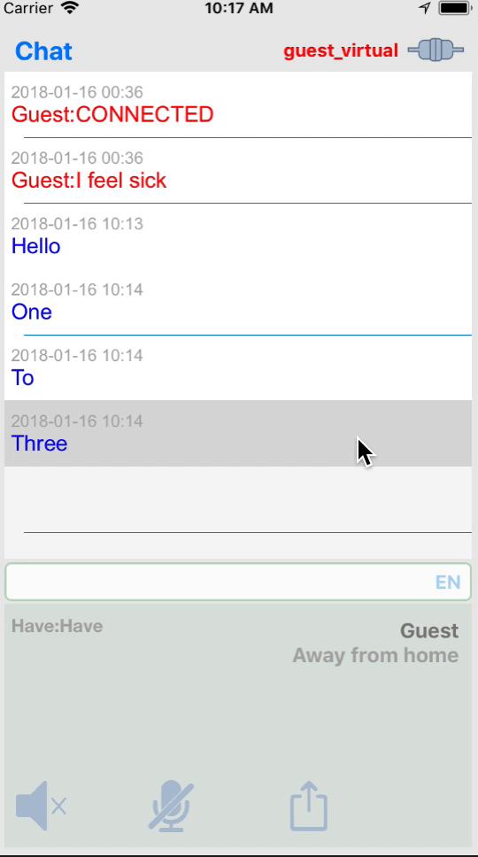
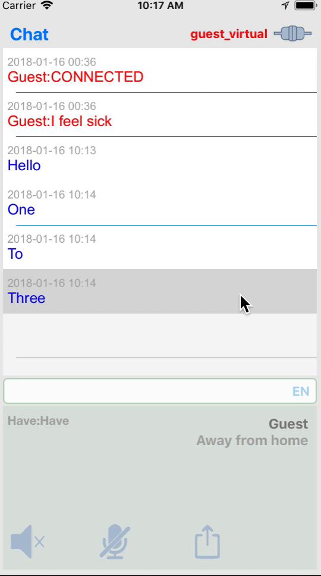

Показать Подсказку


 


InterActor - помошник при переговорах
Команды (голосом или текстом):
"help" или "?" - показать подсказку
"clear" - удалить записи в текущем окне
"my name is ..." - представьтесь
"I am at home" - текущие координаты дома
"reset" - перезагрузить настройки
"undo" - восстановить предыдущую удаленную запись
"chat", "health", "shopping", "notes" - переключить на соответствующее окно
Поддерживаемые языки (текст):
"zh" - Китайский
"en" - Английский
"fr" - Французский
"de" - Немецкий
"hebrew" - Иврит
"hindi" - Хинду
"italian" - Итальянский
"ru" - Русский
"es" - Испанский
Следующее окно

Микрофон постоянно
Удалить запись
Редактировать
Скрыть клавиатуру